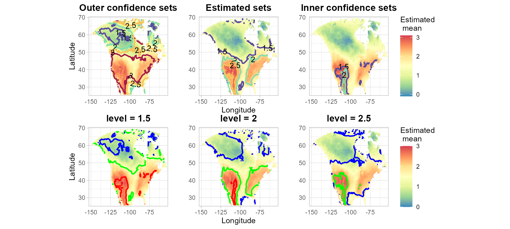

Geographic_Data_Example
Zhuoran (Angela) Yu
2025-10-25
Source:vignettes/Geographic_Data_Example.Rmd
Geographic_Data_Example.RmdThe following example is for displaying the confidence region for the increase of the mean summer temperature (June–August) in North America between the 20th and 21st centuries according to the specific climate model analyzed in Sommerfeld et al. (2018).
SCoRES::SCB_gls_geospatial() function uses multiplier
bootstrap algorithm to construct the SCB for a specified linear
combination of coefficients across a geographical area. The argument
sp_list specifies a list containing the spatial coordinates
and the observations on each spot. data_fit specifies a
data frame containing the design matrix used to fit the spatial
generalized least squares model (notice that the intercept should also
be included inside the data frame), while w defines the
weights for the linear combination of coefficients on which the
simultaneous confidence bands (SCB) are constructed. Use the
correlation argument to specify the correlation structure
for model fitting. If the observations are grouped, a grouping factor
can be specified using the group argument, and a covariance
array V may also be provided to supply a known covariance
matrix for each spot. mask is an optional logical matrix
indicating spatial locations to include in the SCB, with excluded areas
(e.g., water) set to 0 or NA.
library(patchwork)
library(nlme)
library(SCoRES)
library(ggplot2)
# Load data
data(climate_data)
start_time <- Sys.time()
# construct confidence region for the increase of the mean temperature (June-August) in North America between the 20th and 21st centuries
temp = SCB_gls_geospatial(sp_list = climate_data$Z,
level = 2,
data_fit = climate_data$X,
w = c(1,0,0,0),
correlation = climate_data$correlation,
mask = climate_data$mask,
alpha = 0.1)
end_time <- Sys.time()
time_taken <- end_time - start_time
print(time_taken)
#> Time difference of 9.748226 minsHeat maps show the estimate of the mean temperature difference. The first row displays the contours of the outer confidence regions, the estimated inverse regions, and the inner confidence regions, for various levels. The three plots in the second row display the simultaneous confidence regions (SCRs) for the inverse regions, where the estimated mean difference is greater or equal to the individual levels of 1.5, 2.0, or 2.5 respectively. In the second row, the blue line is the contour of the outer confidence region, the green line is the contour of the estimated inverse region and the red line is the contour of the inner confidence region.
par(mfrow = c(2, 3), mar = c(3, 3, 2, 1))
p2 = plot_cs(list(scb_up = temp$scb_up, scb_low = temp$scb_low), levels = c(1.5, 2,2.5,3), x = temp$x, y = temp$y, mu_hat = temp$mu_hat, xlab = "Longitude", ylab = "Latitude", level_label = T, min.size = 40, palette = "Spectral", color_level_label = "black")
p1 = plot_cs(list(scb_up = temp$scb_up, scb_low = temp$scb_low), levels = c(1.5,2,2.5), x = temp$x, y = temp$y, mu_hat = temp$mu_hat, xlab = "Longitude", ylab = "Latitude",together = F)
p = p2/p1
p